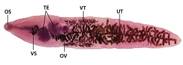
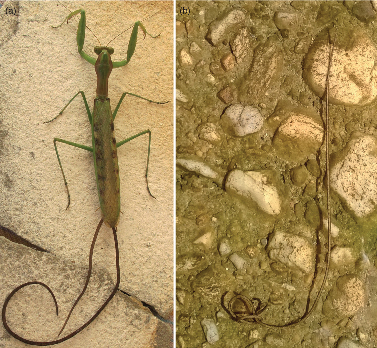
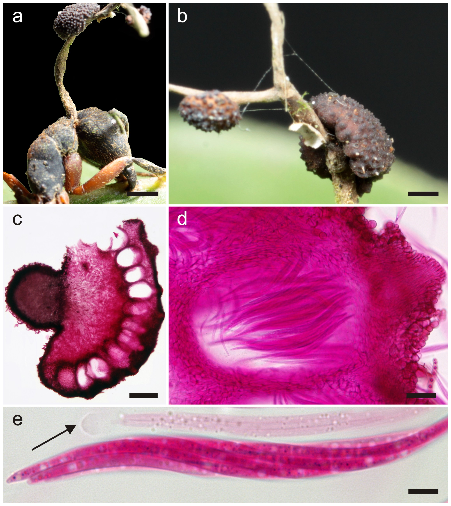

Can a parasite hijack behavior?
Yes—some infections change what an animal does in ways that help the parasite complete its life cycle.

CDC / DPDx · Public domain
The ant that clamps onto a plant
The lancet liver fluke, Dicrocoelium dendriticum, cycles through a snail, an ant, and a grazing mammal. Infected ants can climb vegetation and clamp down with their jaws, putting them in the path of a grazing animal. A field study found that attachment was strongly linked to cooler temperatures and could reverse as conditions changed. Researchers are still investigating the precise mechanism.
The worm that needs a swimming pool
Horsehair worms develop inside insects such as mantises. Mature worms need water to reproduce. Experiments found that infected mantises were more attracted to horizontally polarized light—a cue from water surfaces—and more likely to enter water. The worm can then emerge. This is a change in sensory-guided behavior, not evidence of a parasite making conscious decisions.

Photo: Lynette Clennell (March 2015), in Schmidt-Rhaesa & Perissinotto (2016), ZooKeys 566, Figure 1. · CC BY 4.0
The real “zombie-ant” fungus
Ophiocordyceps fungi can cause specific ant hosts to climb and bite vegetation before dying. A fungal stalk later develops. A 2017 study found fungal networks around and within muscles while the brain itself remained uninvaded at the examined biting stage. A fungus can be parasitic, even though it is not a worm or protozoan.

Evans, Elliot & Hughes (2011), PLOS ONE, Figure 2 · CC BY
How would you test whether behavior really changed?
Compare infected and uninfected animals under the same conditions. Measure a specific outcome—such as attachment, light preference, or water entry—and test alternative explanations. A dramatic video alone cannot explain the mechanism.
Keep the claim precise
“Mind control” is a memorable nickname. Host-behavior manipulation is the more accurate description. These are unusual animal examples, not common human infections; they do not demonstrate human zombie behavior.
Sources & further exploration
- Gasque & Fredensborg, 2023 · Fluke-infected ant behavior
- Kobe University · Hairworms and polarized light, 2021
- Fredericksen et al., 2017 · Fungal networks in ants
- Boillat et al., 2020 · Predator fear in infected mice
Educational content reviewed October 4, 2026. Photographs show real specimens or research observations; stains and imaging methods affect their appearance. CDC images are available free from CDC. Their use does not imply endorsement by CDC, HHS, or the U.S. Government.